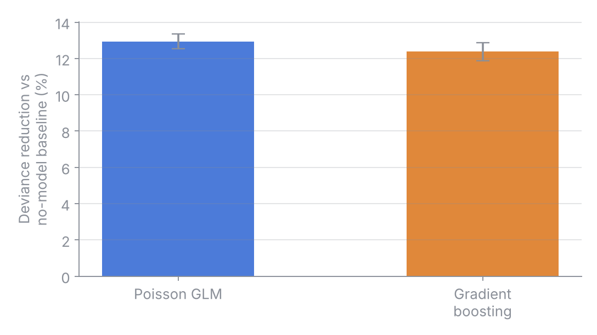
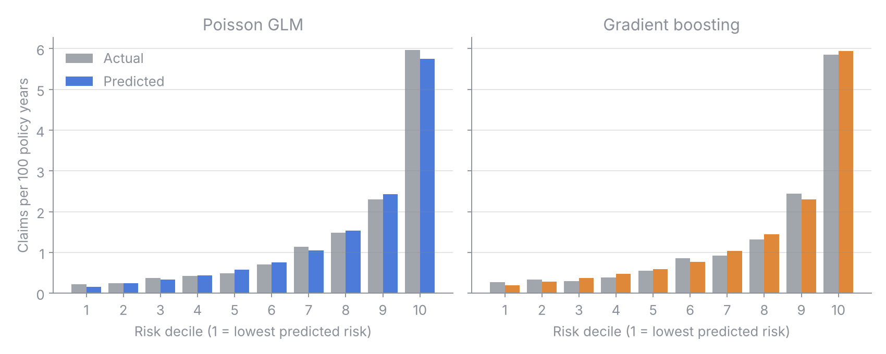
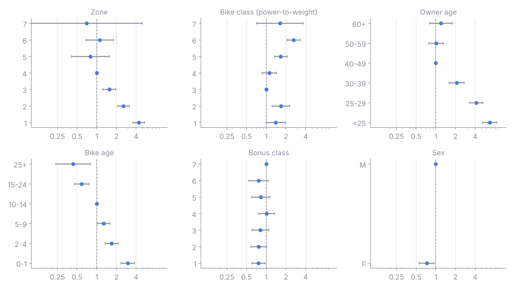
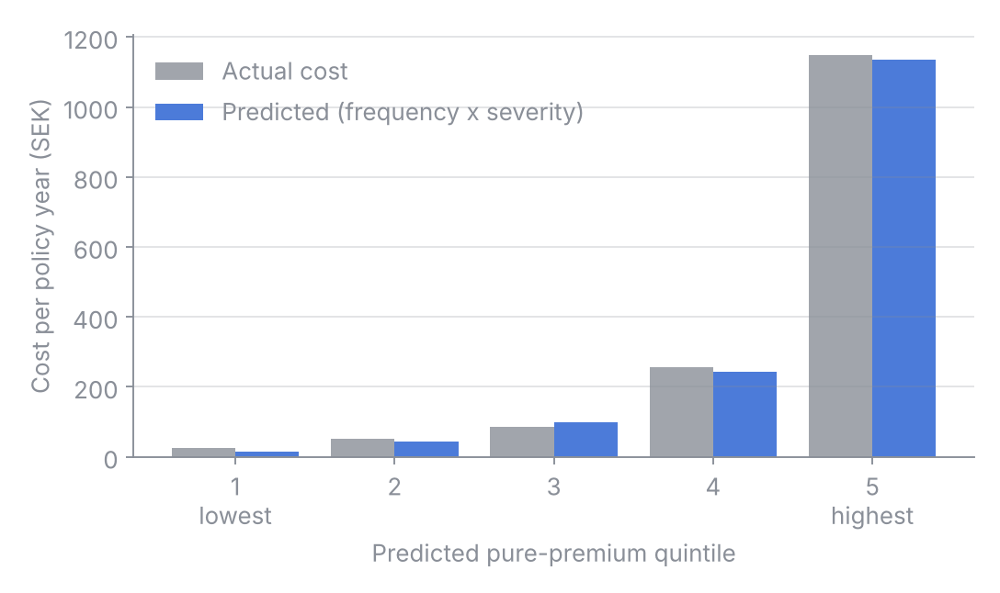

Motorcycle Insurance Pricing
A Poisson GLM for claim frequency, a Gamma GLM for claim cost, and a test of whether gradient boosting beats them. On this data it does not, and the simple model ranks risk from 0.2 to 6.0 claims per 100 policy years.
The question
An insurer prices a motorcycle policy by estimating how often it will claim and how much a claim will cost, then multiplying the two. Frequency is the harder part here because claims are rare: 693 claims across 65,000 policy years. With so few events, a flexible model can easily fit noise, so the useful question is how much structure the data supports.
The data
The policies come from Wasa, a former Swedish insurer, and cover partial casco insurance for motorcycles. The data was published with Ohlsson and Johansson's textbook Non-life insurance pricing with generalized linear models and is aggregated into cells of policies sharing the same rating factors. Each cell records policy years (exposure), claim count and total claim cost in Swedish kronor.
Six rating factors are used: owner age, sex, geographic zone (1 to 7), bike class (power-to-weight ratio, 1 to 7), bike age and bonus class (claim-free history). Ages are grouped into bands. I dropped 2,074 cells with zero exposure, which together hold 4 claims that cannot be attributed to any time at risk.
Method
- Frequency. A Poisson GLM with the log of exposure as an offset, so a cell with twice the policy years is expected to have twice the claims.
- Challenger. Gradient boosting with a Poisson loss and the same six factors.
- Validation. Five-fold cross-validation repeated twice, giving 10 held-out folds. Regularisation and boosting settings are tuned inside each training fold, so no fold's test data influences its own model.
- Metric. Poisson deviance on held-out data, shown as the percentage reduction against a model that predicts the average rate for everyone.
- Severity. A Gamma GLM with a log link on cost per claim, weighted by claim count.
A simple GLM matches gradient boosting
| Model | Deviance reduction | Gini | Better than GLM |
|---|---|---|---|
| Poisson GLM | 12.9% ± 0.4 | 0.557 | n/a |
| Gradient boosting | 12.4% ± 0.5 | 0.536 | 0 of 10 folds |
Both models improve on the no-model baseline by about 12 to 13%, and the GLM is slightly ahead in every fold. Plus-or-minus values are standard errors across folds, and the Gini coefficients come from out-of-fold predictions of one repetition. This is a statement about this dataset: six categorical factors and 693 claims leave little for a flexible model to find. A GLM also has the advantage that every price relativity can be read off and explained.

Predicted risk tracks actual claims
To check calibration, I ranked every policy cell by its out-of-fold predicted frequency, split them into ten equal-sized groups, and compared predicted with actual claims. The riskiest tenth claims about 6.0 times per 100 policy years against 0.2 for the safest tenth, a ratio of roughly 27. The safest group holds only 18 claims, so that ratio is approximate.

What drives claim frequency
The chart shows GLM relativities: the multiplier on claim frequency for each level, compared with a reference level and holding the other factors fixed. Whiskers are 95% confidence intervals. Levels with few claims, such as zone 7 with a single claim, have wide intervals.
- Owner age. Owners under 25 claim about 6.7 times as often as owners aged 40 to 49 (95% interval 5.2 to 8.6). The 25 to 29 band is 4.2 times and the 30 to 39 band 2.1 times.
- Zone. Zone 1 claims about 4.4 times as often as zone 4 (3.6 to 5.4). In raw data that is 3.0 claims per 100 policy years against 0.6.
- Bike age. Bikes up to a year old claim about 3.0 times as often as bikes aged 10 to 14, and bikes aged 15 to 24 about 0.6 times as often.
- Bike class. Class 6, the highest class with substantial exposure, is 2.6 times class 3.
- Sex. Women claim about 0.73 times as often as men (0.56 to 0.95), a weaker effect than the others.
- Bonus class. Not significant once the other factors are in the model (likelihood-ratio p = 0.15). Owner age, zone, bike class and bike age all have p below 0.001, and sex has p = 0.014.

Sex is kept here because it is in the original data. Using gender as a rating factor has not been allowed in EU and UK insurance pricing since 2012, so a current model would leave it out.
Severity, and turning it into a price
Claim cost depends mostly on bike age. The average claim costs SEK 24,446, but SEK 39,460 on bikes under two years old against SEK 8,713 on bikes aged 15 to 24. A Gamma GLM using bike age, zone group and owner age band lowers held-out Gamma deviance from 2.00 to 1.65 and does better than a flat average in all 5 folds. With 666 claim cells it is a noisier model than the frequency one.
Multiplying predicted frequency by predicted severity gives a pure premium, the expected claim cost per policy year before expenses and profit. Grouped into quintiles of predicted pure premium, the out-of-fold predictions stay close to actual cost, and the top quintile is predicted at SEK 1,136 against SEK 1,149 actual. A version using a flat average severity under-predicted the top quintile by about 13% and over-predicted the bottom by about 80%, so the severity model matters.

Limits
- 693 claims is a small sample. Rare levels such as zone 7 and bike class 7 are poorly estimated.
- The data is aggregated, Swedish, from 1994 to 1998, and covers motorcycles. It says nothing about current prices or any current insurer's book.
- Folds split policy cells at random, which is reasonable for aggregated data but not the same as splitting by time or by policyholder.
- Gradient boosting was tuned over a small grid. A larger search, monotonic constraints or interaction terms in the GLM could change the comparison.
- Cost is not adjusted for inflation, and large claims are not capped or modelled separately.
Natural next steps are interaction terms for age and bike class, a Tweedie model that fits pure premium directly, and a time-based validation split.